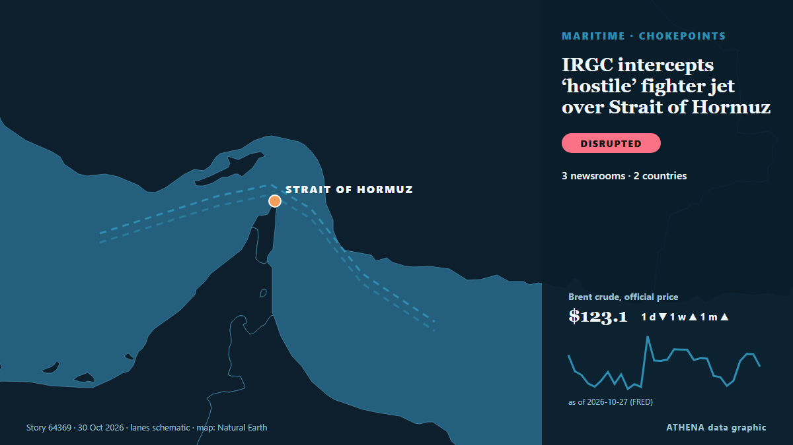

Κυρώσεις & διενέξεις
| 17 Οκτ | 0 |
|---|---|
| 18 Οκτ | 0 |
| 19 Οκτ | 0 |
| 20 Οκτ | 0 |
| 21 Οκτ | 0 |
| 22 Οκτ | 0 |
| 23 Οκτ | 0 |
| 24 Οκτ | 1 |
| 25 Οκτ | 1 |
| 26 Οκτ | 2 |
| 27 Οκτ | 3 |
| 28 Οκτ | 8 |
| 29 Οκτ | 2 |
| 30 Οκτ | 1 |
Οι τίτλοι των ειδήσεων παρουσιάζονται στα αγγλικά, όπως δημοσιεύτηκαν.

IRGC intercepts ‘hostile’ fighter jet over Strait of Hormuz
TEHRAN, Oct. 30 (MNA) – Iran’s Islamic Revolutionary Guard Corps (IRGC) Aerospace Force intercepted a "hostile" fighter jet near Qeshm Island in the Strait of Hormuz on Thursday night. από Mehr News (English)
Tanzania, Uganda bolster ties in investment, energy, road projects as bilateral trade hits 406.8m US dollars
KAMPALA: TANZANIA and Uganda are seeking to deepen economic ties through trade, investment, energy and infrastructure projects, with bilateral trade reaching 406.8m US dollars in the 2024/25… από Daily News
Colonial West still trying to exploit Africa’s resources: Putin
The Russia-Africa Summit aims to push for Russian political and economic influence on Africa. από SABC News
Russia seeks US sanctions relief for Putin envoy's investment fund
Moscow is discussing the possible lifting of US sanctions against the Russian Direct Investment Fund (RDIF) with the administration of Donald Trump, Russian ruler Vladimir Putin's aide Yuri Ushakov… από Ukrainska Pravda (English)
Man remanded in custody over dissident feud shooting charge
John-Jo Lynch, 24, is accused of the attempted murder of a man who was shot as he sat inside a taxi in February 2025. από Evening Standard (London)
Iran imports at least $2 billion in military supplies despite US blockade - Reuters
Iran has used a secret network of more than 5,000 military agencies to import at least $2 billion worth of equipment, explosives and heavy-duty trucks since January 2025, bypassing Western sanctions… από Iran International (English)
Jetten backpedals on plans to tax the royals
Prime minister Rob Jetten is refusing to act on calls for the royal family to pay taxes, despite his party... από DutchNews.nl
US sanctions 10 North Korean and Russian nationals for role in IT worker fraud
The U.S. has announced new sanctions against 10 North Korean and Russian nationals for their role in IT worker schemes that “defraud American businesses” and generate revenue for Pyongyang’s weapons… από NK News
S. Korea, US, partners reaffirm N. Korea denuclearization goal, back sanctions enforcement
South Korea, the United States and other like-minded partners on Wednesday reaffirmed their commitment to the denuclearization of North Korea, highlighting recent sanctions targeting Pyongyang's… από The Korea Times
Global funding for nature still falling short: Paulson Institute
Concerns have been raised about reduced funding for human trafficking prevention and victim protection in Trinidad and Tobago, with one US official warning that fewer victims were being identified… από Trinidad Express
EU fears Russia-US contacts broader than Brussels expected — TV
According to the TV channel, the Europeans are seeking a way to participate in the talks. από TASS (English)
Russian-Ukrainian Couple Make Five-Day Escape To Hungary From Kyiv
Several days into the invasion that has sparked massive international sanctions, the Russian military attempted to encircle and subdue Ukrainian cities with intensifying bombardments on Wednesday. από NDTV
Australia should do more to back Japan and the ICC in the face of US sanctions
The US is sanctioning the ICC and its Japanese president – and Australia has offered little beyond private words. από Lowy Institute — The Interpreter